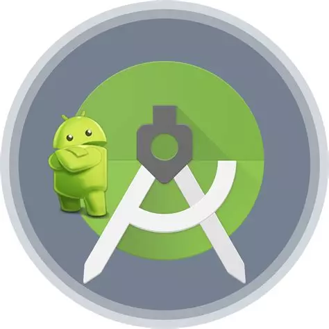
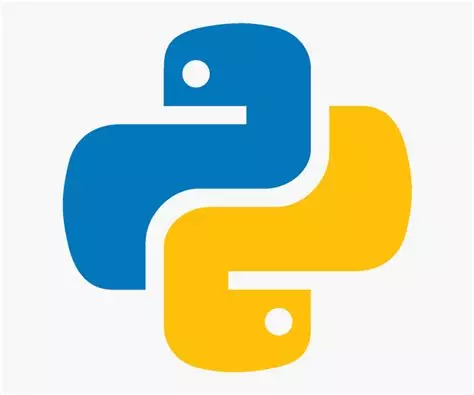
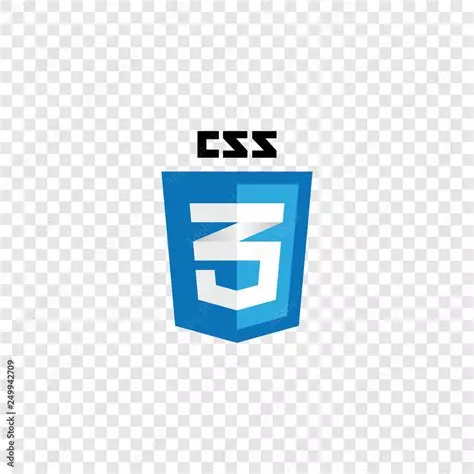
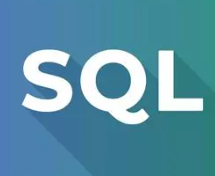

J'ai commencé à m'intéresser à l'informatique en sortie de brevet des collèges, en faisant des portes ouvertes. Le lycée Déodat de Séverac proposait un Bac Pro Systèmes Numériques, et j'ai trouvé que c'était une bonne idée de m'orienter vers ce domaine.
J'ai donc fait un Bac Pro SN pendant 3 ans, et j'ai obtenu mon diplôme en 2024. Après cela, j'ai décidé de continuer mes études en BTS SIO SLAM pour découvrir plus en détails le développement.

Android studio
Python
CSS
SQL